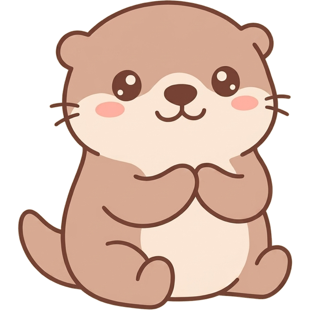
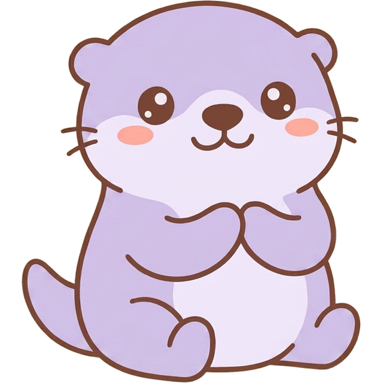

Meet Otto & Lotti! 👋
Two little otters · One big splash
Just two little otters living our best life and bringing a daily dose of joy to your feed. Subscribe to catch all of our fun moments, playful antics, and cute adventures! ❤️
- 🐟 Snack breaks, all day every day
- 🤿 Splashy dives & belly flops
- 🫧 Daily joy, delivered